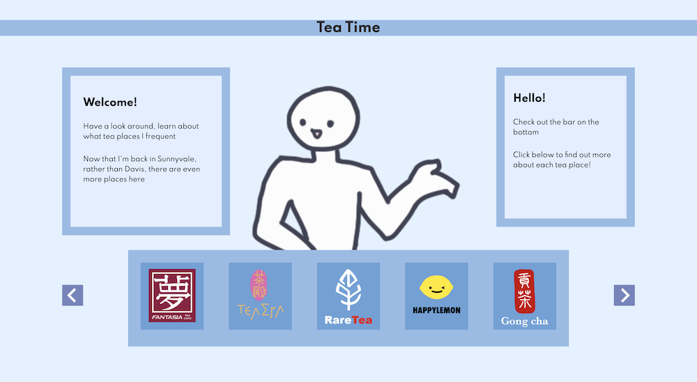

interactive site
This project was done as the final project in an interactive media class. Utilizing my passion for tea, I made this as an interactive list/display of the tea places I frequent near home. Here is the home page of that quarter, with the final project being found under "Final/Final Project". Attributes of the site include pictures and illustrations I made myself, done/edited in Adobe Photoshop.
I later added the "Portfolio" seen under the "Final" section; this was the final project in the previous interactive media class I took. I thought it may be interesting to contrast that site with this one.
HTML, CSS, JavaScript + elements from Adobe Photoshop; March 2021